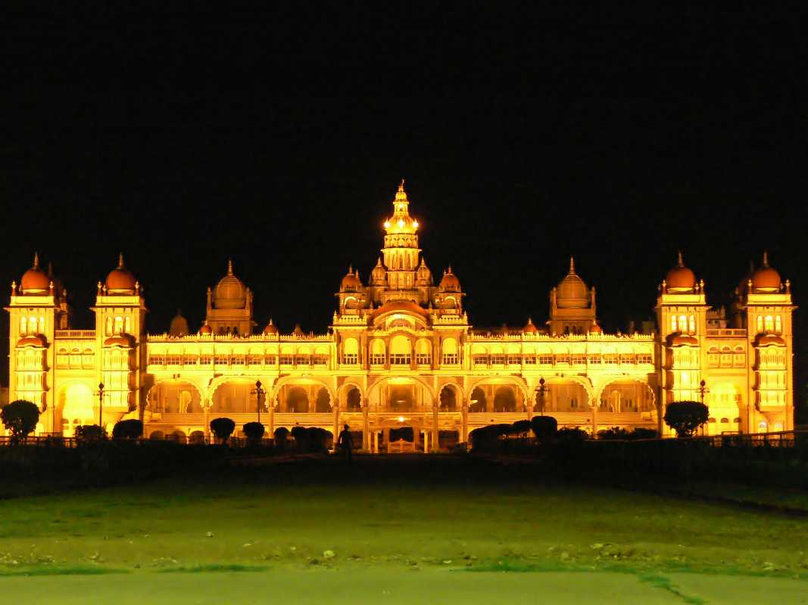

Tourist Guide
Mysore Palace

Mysore Palace is a historical palace and a royal residence at Mysore in the Indian State of Karnataka. It is the official residence of the Wadiyar dynasty and the seat of the Kingdom of Mysore. The palace is in the centre of Mysore, and faces the Chamundi Hills eastward. Mysore is commonly described as the 'City of Palaces', and there are seven palaces including this one; however, 'Mysore Palace' refers specifically to this one within the Old Fort.
The land on which the palace now stands was originally known as puragiri (literally, citadel), and is now known as the Old Fort. Yaduraya built the first palace inside the Old Fort in the 14th century, which was demolished and constructed multiple times. The current structure was constructed between 1897 and 1912, after the Old Palace was burnt ablaze
Mysore Palace is now one of the most famous tourist attractions in India.